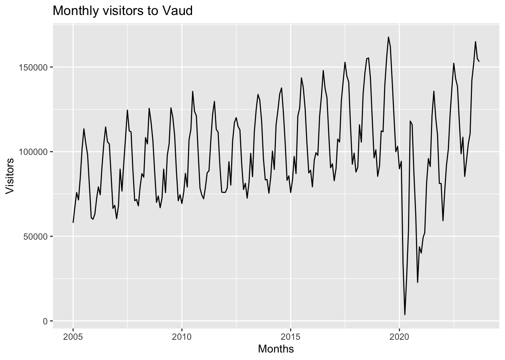
victor_report
Introduction
Tourism is a significant sector for Switzerland’s economy, contributing greatly to its GDP and employment. Accurate forecasting of tourist arrivals is essential for effective planning and decision-making in the tourism industry. This project aims to predict the total number of visitors to Vaud from October 2023 to December 2024 as well as the number of visitors from the Philippines to Ticino during the same period. Utilizing historical data from 2005 to September 2023, we apply various forecasting techniques, integrating exogenous variables such as GDP and weather conditions to enhance the accuracy of our predictions.
Objectives
The primary objectives of this project are:
To forecast the total number of visitors to the canton of Vaud from October 2023 to December 2024.
To forecast the number of visitors from the Philippines to the canton of Ticino for the same period.
We aim to compare different time series models and include exogenous variables to improve forecast accuracy.
EDA
Before plotting the data, we translate german months to english, and create a date type column.
Here we plot the total visitors for canton Vaud for the entire time frame.
The time series plot of monthly visitors to Vaud from 2005 to 2023 reveals several key insights. There is a clear upward trend in visitor numbers, indicating growing tourism. The plot shows strong seasonal patterns, with regular peaks and troughs each year, reflecting typical tourist activity periods. A significant drop in visitors during the COVID-19 pandemic (2020-2022) is evident, illustrating the impact of global travel restrictions. Post-pandemic, visitor numbers recover, though with some variability. This highlights the need to account for trends, seasonality, and anomalies in our forecasting models.
Below is the plot for visitors to Ticino, from the Philippines
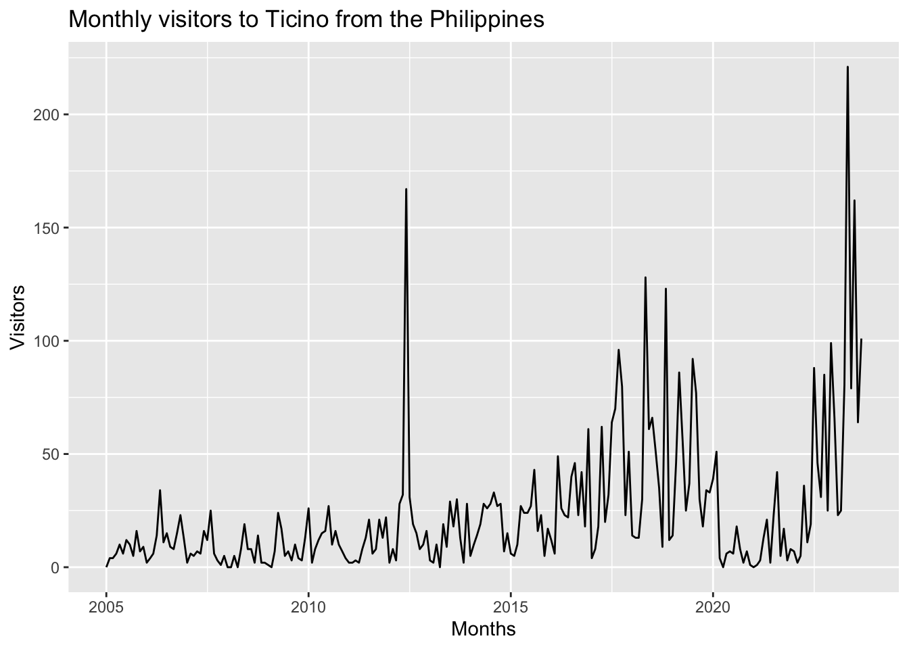
As the number of visitors is greatly reduced compared to the previous plot, we observe much more variability in the number of visitors across months. It is hard to make out any seasonality with the naked eye, but we do notice an upwards trend. The effect of COVID is also very noticeable, with a dip in the number of visitors between 2020 and 2022.
Data cleaning/wrangling
We consider COVID to be a black swan, and a unique event, and we will assume that it will not happen again during the period that we are predicting (Oct 23 - Dec 24). Knowing this, we decided it would be best to completely remove the data during the lockdown period, as it would bias our forecasts. Lockdown in Switzerland started in March 2020, and all measures except masks were lifted indefinitely in February 2022, which gives us lockdown period of exactly 2 years. It’s important that the data we remove is in multiples of 12 months, as it won’t affect seasonality. To implement this, we create a new dummy variable called covid to our data frame, that will be set equal to 1 during this time frame, and 0 everywhere else.
We then remove all the data where covid = 1, and add 2 years to the data before March 2020, so there are no gaps in our tsibble. Below are plots for both cases.
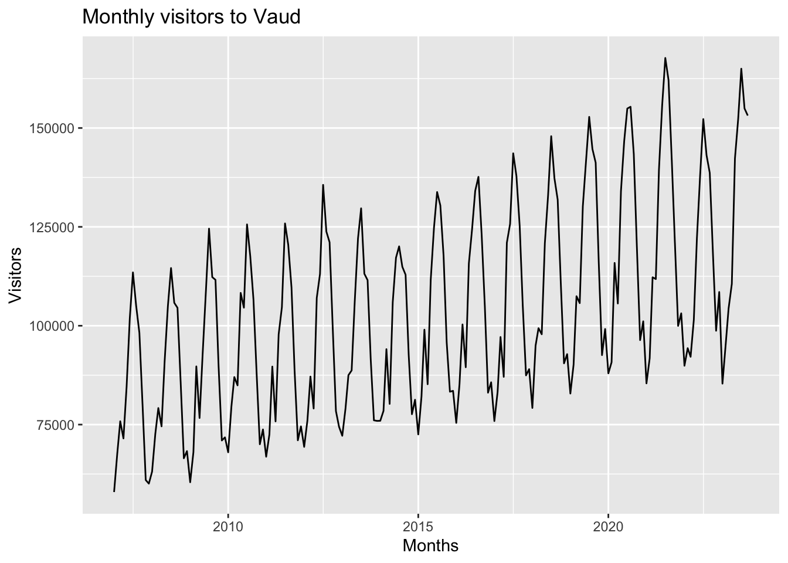
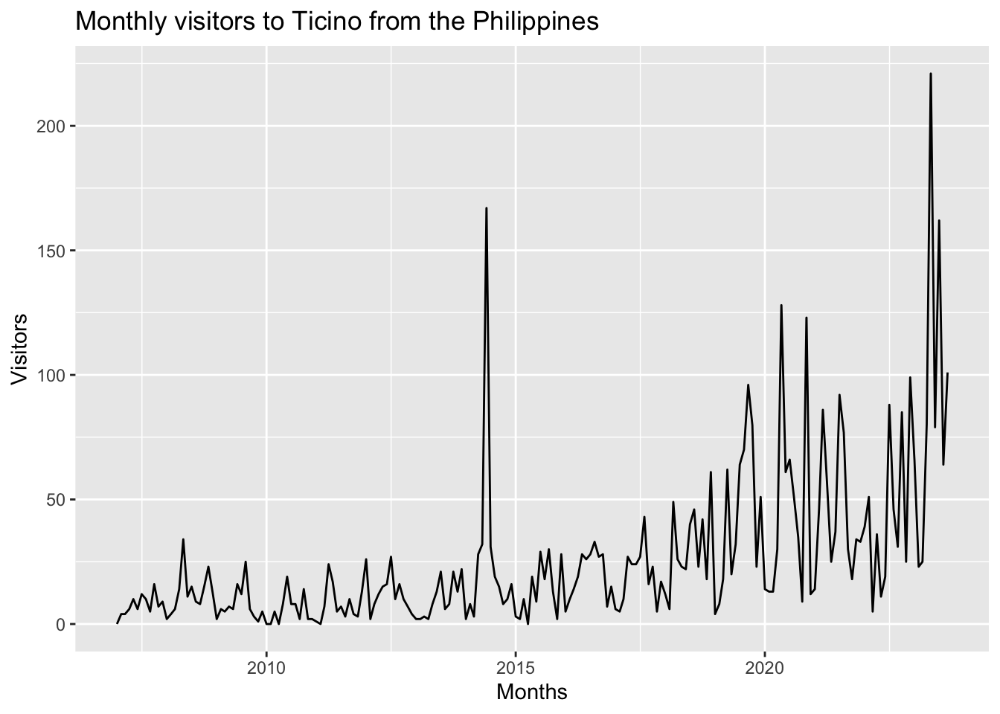
Modeling
We decided first to make an automatic ARIMA model to forecast visitors. Below are the automatic ARIMA models, the AIC and BIC values, and the forecasts for both cases.
Series: value
Model: ARIMA(0,0,3)(0,1,2)[12] w/ drift
Coefficients:
ma1 ma2 ma3 sma1 sma2 constant
0.3819 0.3574 0.3019 -0.5603 -0.1391 2672.4410
s.e. 0.0730 0.0698 0.0677 0.0770 0.0722 242.7348
sigma^2 estimated as 20137890: log likelihood=-1858.22
AIC=3730.44 AICc=3731.06 BIC=3753.13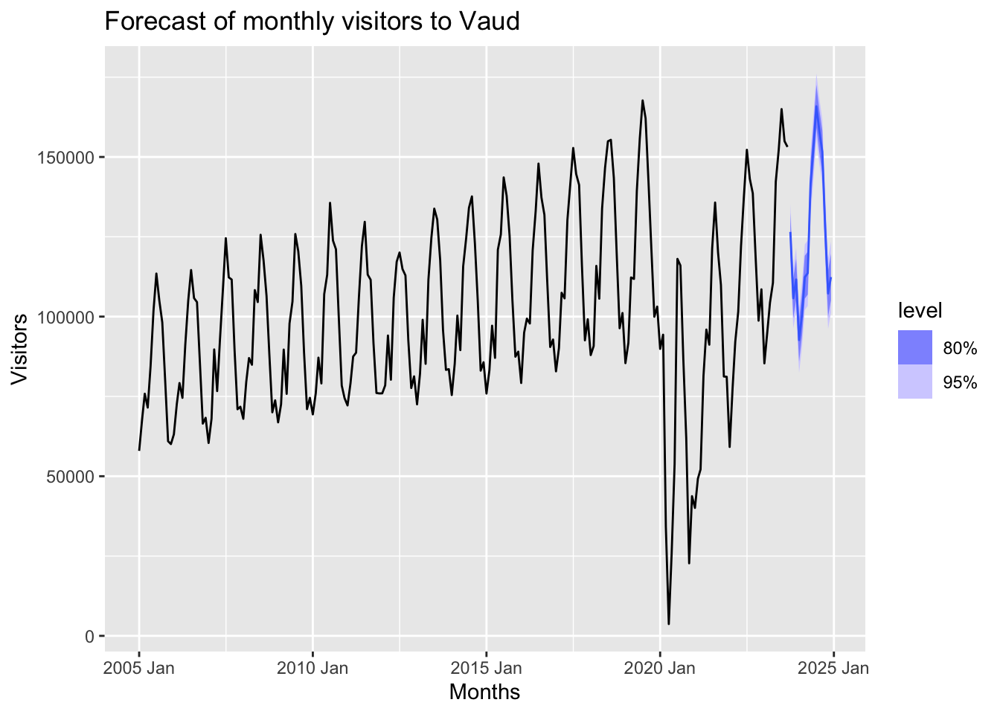
Series: value
Model: ARIMA(0,1,2) w/ drift
Coefficients:
ma1 ma2 constant
-0.8049 -0.0963 0.3780
s.e. 0.0657 0.0688 0.1947
sigma^2 estimated as 651.7: log likelihood=-931.03
AIC=1870.05 AICc=1870.26 BIC=1883.25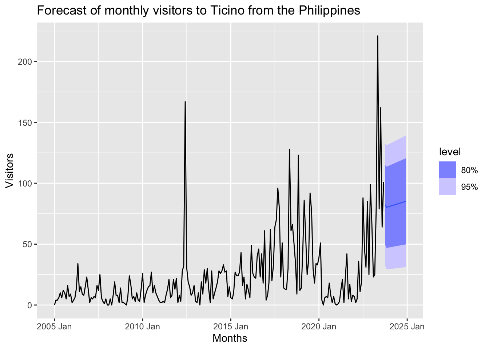
We notice that the forecast for Vaud visitors is quite precise, with a very small confidence interval. The model accounts for seasonality as well as the upwards trend. On the other hand, the forecast for Ticino visitors is very basic, resembling a naive model with a slight upwards trend, and without seasonality.
To improve our current model, we decided to add exogenous variables that we think are likely to impact the number of tourists in a region. The first exogenous variable is GDP per capita in Vaud and Ticino. The hypothesis we’re making is that higher GDP will boost tourism. Looking at the overall visitors plot, we notice that there are considerably more visitors during summer months, when the weather is warm and precipitation is low, than in winter. This is why we’ve chosen the second and third exogenous variables to be temperature and precipitation. For Vaud, we use the monthly average temperature and precipitaion in the city of Payerne as a proxy for the canton. We do the same with the city of Lugano for Ticino.
Below are the ARIMA models using these exogenous variables, with the forecasts.
Series: value
Model: LM w/ ARIMA(0,1,4)(0,0,2)[12] errors
Coefficients:
ma1 ma2 ma3 ma4 sma1 sma2 GDP.V Temperature
-0.3554 0.0531 -0.0828 -0.4986 0.7157 0.5602 -0.0302 653.7395
s.e. 0.0737 0.0694 0.0731 0.0668 0.0869 0.0700 0.1592 242.5833
Precipitation
-12.1293
s.e. 8.8688
sigma^2 estimated as 44217798: log likelihood=-1951.09
AIC=3922.17 AICc=3923.34 BIC=3955.16
Series: value
Model: LM w/ ARIMA(0,1,1) errors
Coefficients:
ma1 GDP.T Temperature Precipitation intercept
-0.9604 4e-04 1.1101 0.0160 0.2130
s.e. 0.0257 1e-04 0.2562 0.0176 0.0829
sigma^2 estimated as 506.7: log likelihood=-865.04
AIC=1742.08 AICc=1742.51 BIC=1761.87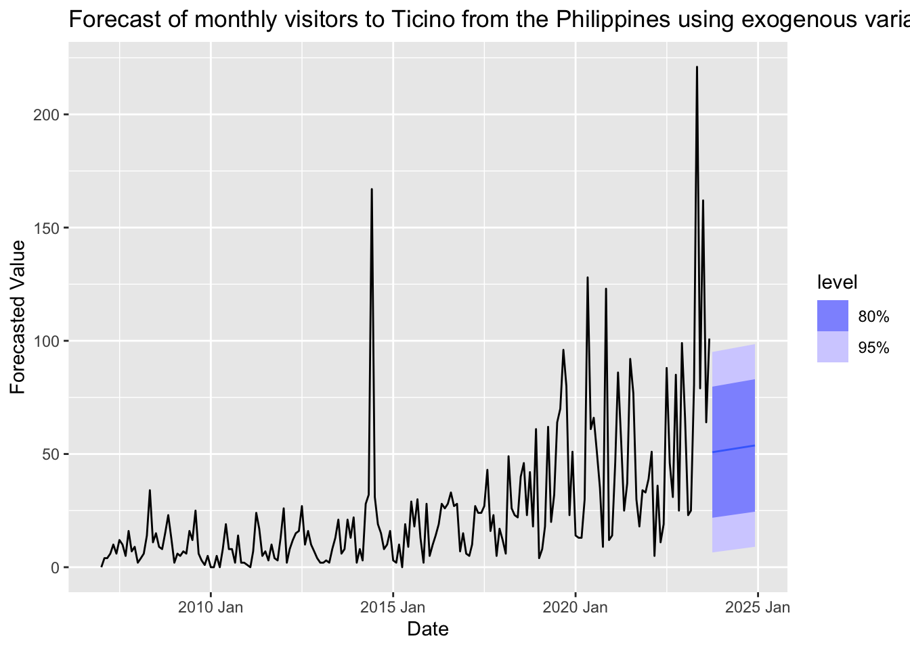
The exogenous variables have coefficients indicating a positive relationship with the dependent variable, particularly significant for temperature. However, the AIC and BIC values are significantly higher than the automatic ARIMA model without exogenous variables, indicating a more complex model without necessarily providing a proportionate improvement in fit as per the increase in complexity.
Forecast and validation
After modeling the forecasts for both Vaud and Ticino, we will opt for our first models, the automatic ARIMA, for several reasons. Firstly, this model is simpler than our exogenous variables model, and we generally prefer to use simpler models, unless our complex model is proven to have superior forecasts. In our case, we don’t have the future data, so we are unable to measure the accuracy of both models. We can however look at indicators such as the AIC and BIC, which tell us that the simple model is superior, especially in the case of Vaud, where we have enough data to make a decent forecast.
For the Ticino model, the amount of visitors is so low, and the variance is so high, that even the automatic ARIMA model has difficulty forecasting the future, and the confidence levels are very high. We thought about using a mean or naive model for this forecast, but these would not take into account the upwards trend in visitors, which we assume to be true. Finally, for this forecast we will also go with the automatic ARIMA model.
Limits and Discussion
Appendix
Vaud scatterplot matrix to see relationship between variables
print(vaud_scatterplot_matrix)`geom_smooth()` using formula = 'y ~ x'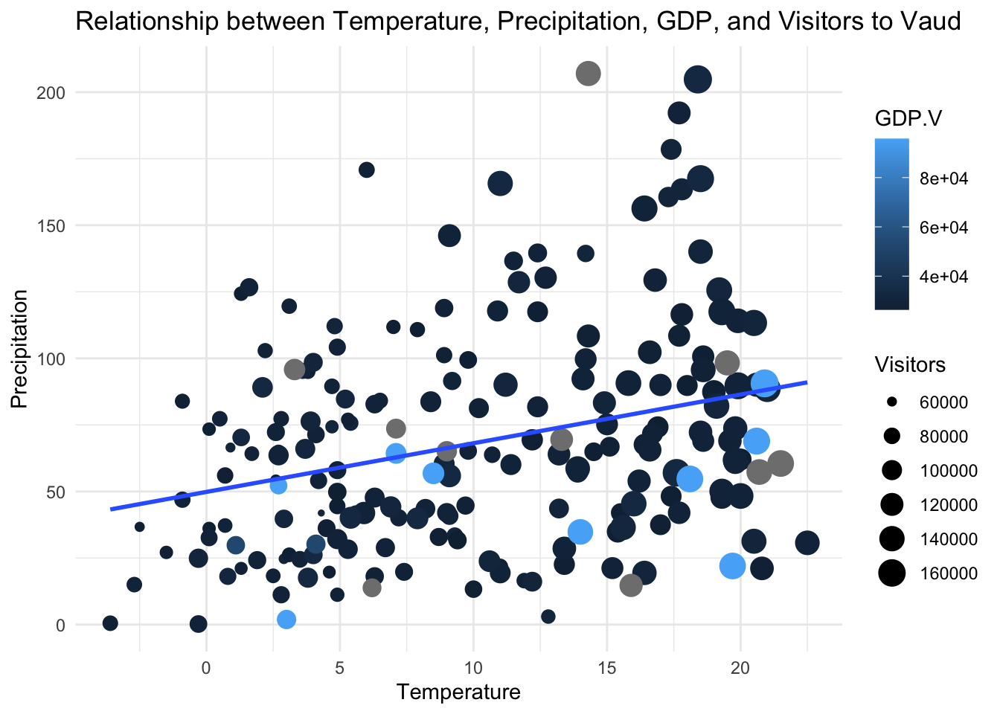
Vaud ACF plot
vaud_p1 + vaud_p2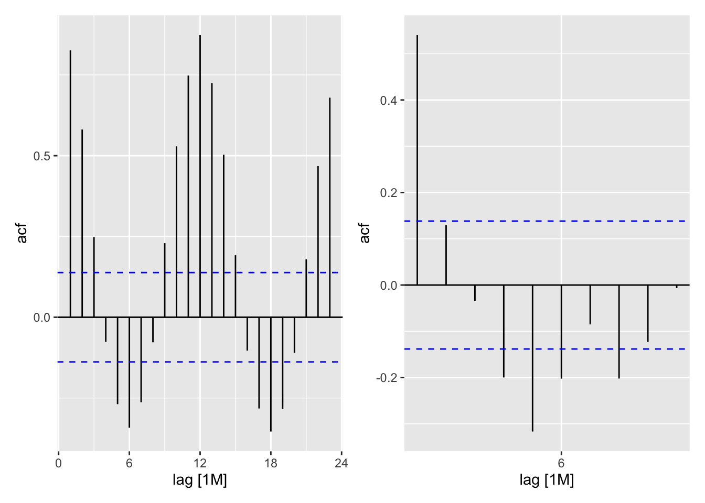
Vaud STL decomposition
components(vaud_df_stl) %>% autoplot()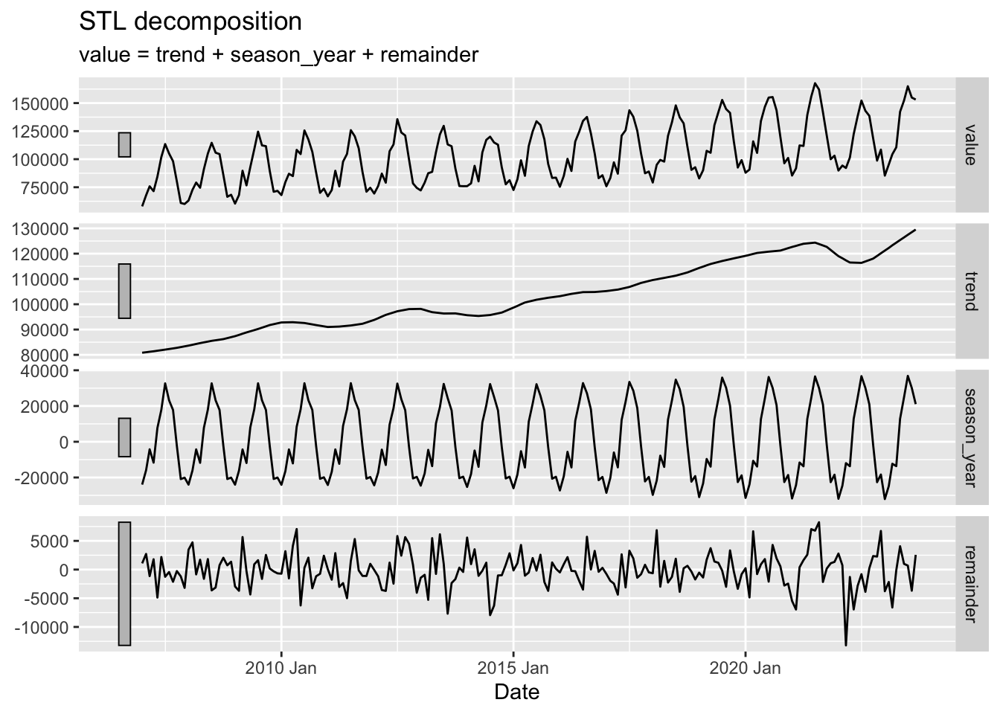
Ticino scatterplot matrix to see relationship between variables
print(ticino_scatterplot_matrix)`geom_smooth()` using formula = 'y ~ x'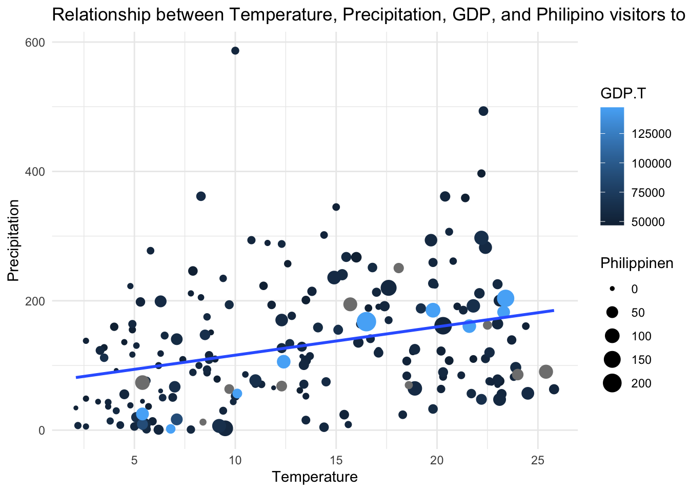
Ticino ACF plot
ticino_p1 + ticino_p2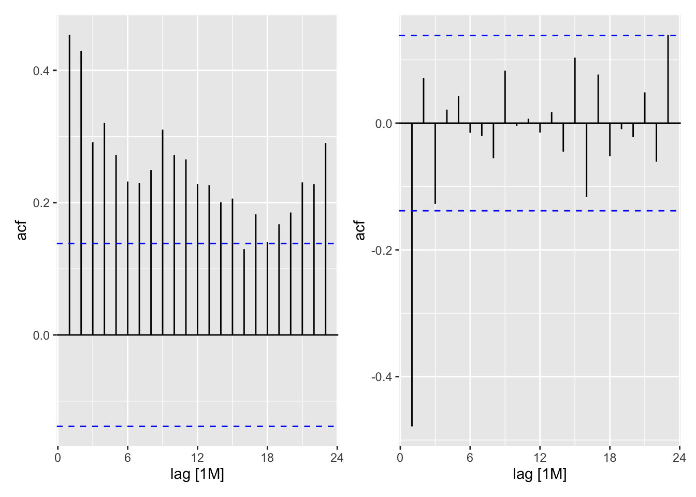
Ticino STL decomposition
components(ticino_df_stl) %>% autoplot()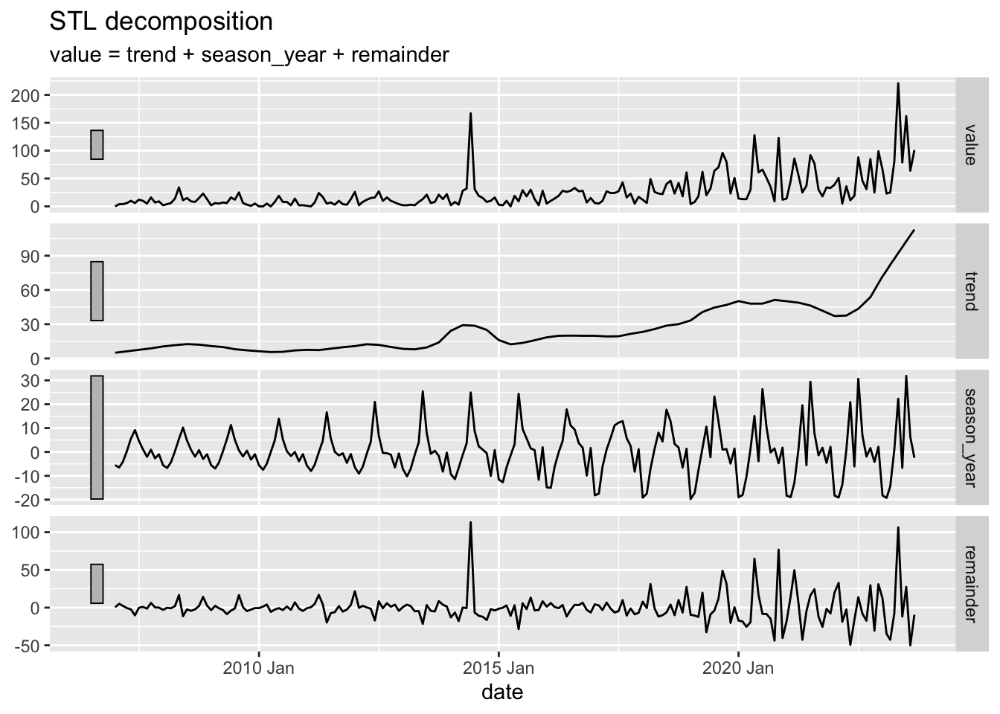